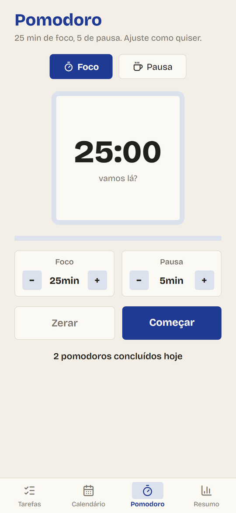
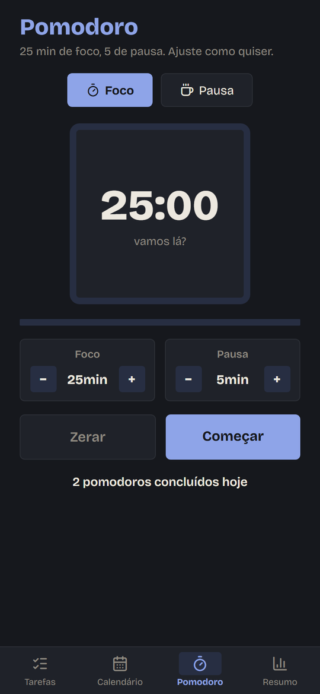

Você anota, o Studify avisa na hora certa e mostra como andam seus estudos. Abriu o app, sabe em dois segundos o que vence primeiro.


Gravado direto do app: criar uma prova, riscar uma tarefa, trocar de tela e de tema.


Três passos, sem planilha e sem bloco de notas.
Crie módulos (semestre, bimestre, curso) e as matérias de cada um, cada uma com sua cor.
Toque no +, escolha o tipo, o prazo e o lembrete: na hora, 1 hora, 1 dia ou 3 dias antes.
Conclua com um toque, use o Pomodoro e veja no Resumo quantas tarefas fez e quantos dias seguidos estudou.
Crie um módulo, adicione as matérias e escolha entre 8 cores. Nos cards e no calendário, você bate o olho e já sabe de qual matéria é.

Os dias com provas e entregas aparecem marcados na cor da matéria. Toque num dia para ver o que tem nele.


25 minutos de foco e 5 de pausa, do jeito clássico. Ajuste os tempos como quiser: o cronômetro continua rodando em qualquer aba, em segundo plano e com o app fechado.


Concluídas, pendentes, atrasadas e a sequência de dias estudando. Lançou a nota de uma prova? O app calcula a média por matéria.


Avisos que funcionam com o app fechado e sem internet.
As próximas tarefas direto na tela inicial do Android.
Semanal, mensal ou a cada N dias, sem precisar recriar.
Fotografe o caderno ou a lousa e anexe na tarefa.
Exporte e importe seus dados num arquivo, quando quiser.
Celular e tablet com os mesmos dados, se você ativar.
Prints reais do Studify. Use o botão do topo para ver no outro tema.

Tudo é guardado num banco dentro do seu celular, e o app funciona sem internet. Sem conta, sem anúncio, sem rastreamento. A nuvem só entra se você quiser sincronizar com outro aparelho.
Disponível para Android, em APK. Instale, crie suas matérias e lance a primeira prova.